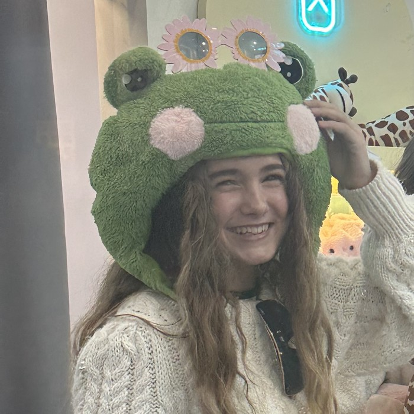

I research and match women-owned businesses with real grants they qualify for — then help make the application easy. No cost. No catch. Just funding that's already out there.
"Women-owned businesses don't get less funding because they deserve less — they get less because finding it takes time most owners don't have. I do the digging, so you can keep running the business."
I look through national programs and your local city, county, and Chamber of Commerce listings for grants your business might qualify for.
I check your business against each program's real eligibility rules, so we're not wasting time on grants you don't qualify for.
I help you organize your story and tighten your application — in your own words, not a template.
Not a pitch — an honest, specific rundown of what actually happens when you work with me.
Location, industry, how long you've owned it, ownership split, rough revenue, employee count, and your story. This is the intake step — see the Grant Resources page for exactly why each detail matters.
I go through national programs (like the Amber Grant, Hello Alice, and IFundWomen) and also dig into city, county, state, and Chamber of Commerce programs specific to where you're located, since those are often the easiest to actually win.
Every program has fine-print eligibility requirements — minimum time in business, revenue caps, industry restrictions, ownership percentage. I check your details against these before I ever suggest a program, so you're not wasting time on grants you can't get.
You get a short, ranked list of grants you're actually eligible for, with deadlines and what each one requires — not a giant spreadsheet of every grant that exists.
For story-driven grants especially, I help you figure out what to lead with and how to structure your answer — but you write it, in your own words. I'm a second set of eyes, not a ghostwriter.
Rolling monthly grants, annual deadlines, application windows that open and close — I keep tabs on the ones relevant to you and give you a heads-up before they close.
Most applicants don't win the first grant they apply for. If you don't get one, I help you find the next one instead of leaving you at a dead end.
If I don't think you qualify for something, or think your odds are genuinely low, I'll say so directly instead of encouraging you to spend hours on a long shot.
For the full picture of what I'm not able to do, see the "What I Don't Do" section on the Grant Resources page.

Hello — I'm Artemis, a high school student based in Irvine. I started The Grant Key because I kept hearing the same thing from women running small businesses near me: there's funding out there, but nobody has time to find it. So I do the research part — matching businesses to grants they're actually eligible for, and helping put a strong application together.
How grants actually work, who's really giving them out, and what to watch for — plus exactly what this service does and doesn't cover.
Monthly grants for women-owned businesses, from $10,000 up to $50,000 in year-end awards. Story-driven application.
Matches your business profile to a rotating list of grants and accelerators from corporate partners.
One universal application gets you considered for grants from partners like Visa and American Express.
The best odds are usually local — city, county, and Chamber of Commerce grant funds rarely show up on national "top grants" lists. Reach out and I'll dig into what's specific to your area.
City, county, and state agencies, plus SBA-affiliated Women's Business Centers. Often tied to hiring, storefronts, or sustainability.
Mission-driven organizations like WomensNet (the Amber Grant) that judge applicants mainly on story and impact, not revenue history.
Companies like Visa, American Express, and eBay fund grants through platforms like Hello Alice and IFundWomen.
For businesses under a year old or with minimal sales — usually judged on the idea and founder story.
For existing businesses looking to expand, hire, or invest in equipment or inventory.
Tied to a sector — beauty, food and beverage, skilled trades, tech, and more.
Smaller awards, often $500–$5,000. Faster and less competitive.
Larger awards, but typically require a live pitch or multi-round application.
Often tied to a civic goal — storefront improvement, hiring, or sustainability.
This varies by program, but most grants draw a similar line between funding real growth and covering costs you'd have anyway:
Every grant sets its own rules for allowable use of funds — this list is a general pattern, not a guarantee. I'll flag each program's actual rules when I share a match.
Proof of ownership (most programs require 50%+ women ownership) · business registration or EIN · basic revenue or financial info · a written story about you and your business · sometimes a business plan or use-of-funds statement · sometimes a small application fee, which many programs will waive for financial hardship if you ask.
Once you share these details, I can tell you fairly precisely which grants you're eligible for — here's exactly what I ask and why each piece matters:
Many of the best-odds grants are local — tied to a specific city, county, or state — so location often narrows the list the most.
Some grants only fund specific sectors — food & beverage, beauty, tech, skilled trades — so this rules in or out a whole category fast.
This is a big one: some grants are only for brand-new businesses (under a year), while others require a minimum time in operation, like 6 months or a year, to prove you're established.
Almost every "women-owned" grant requires at least 50% ownership by a woman or women — this is usually the very first eligibility check.
Some grants cap revenue (to target very small businesses), while others want to see a minimum to prove the business is viable.
Certain programs are built for solo entrepreneurs, others want to see job creation — knowing your team size points to the right ones.
Most grants require a formally registered business — this confirms you meet that baseline before we go further.
Some programs exclude repeat winners or ask you to disclose other funding, so I check this to avoid a wasted application.
Story-driven grants like the Amber Grant weigh this heavily. Even for grants that don't ask for it directly, it helps me match you to programs that fit your specific situation.
Scam alert: Real grants don't come find you — you have to seek them out and apply. If anyone contacts you out of the blue by phone, text, email, or social media saying you've been "selected," "pre-approved," or "chosen" for a grant, that's a scam, especially if they ask for a fee, your bank details, or personal information before you've applied anywhere. Me telling you a new grant program exists is fine — but you should always apply directly through the program's own official website, never through a link or contact someone sends you unsolicited.
I'm a high school student, not a licensed grant writer, financial advisor, or attorney — nothing here is professional or legal advice. I don't write or submit your full application for you; I help you research, match, and organize what you write yourself, in your own words. I can't guarantee funding — no one honestly can — only that we're applying to programs you're genuinely eligible for. I don't handle legal paperwork, taxes, or business registration, and I don't charge a fee or take a percentage of anything you receive. If something falls outside what I can help with, I'll say so directly and point you toward someone qualified.
This is a free, complimentary service — I don't take a cut, a fee, or a percentage of anything you receive. I'm doing this because I want to spend my next two years of high school actually helping women-owned businesses grow, not just talking about wanting to. Selfishly, I also hope to run my own business myself one day, and I figure the best way to learn is by helping people do it first. So: no invoice, no fine print, no upsell. Just help.
Just getting started. This number updates as real businesses get real funding — check back.
I'd rather show you real results later than made-up ones now. Once businesses I've worked with are comfortable sharing, their stories will go here.
Tell me a bit about your business and I'll follow up with grants you're likely eligible for — usually within a few days.